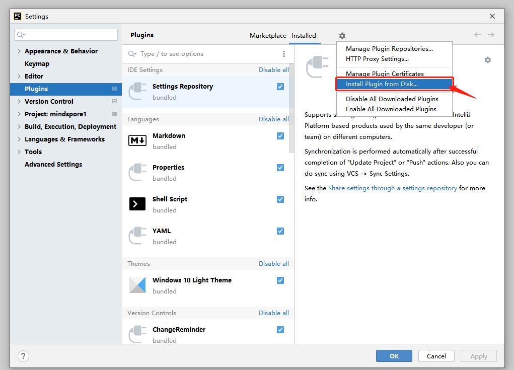

MindSpore Dev Toolkit¶
MindSpore Dev Toolkit is a development kit supporting the PyCharm (cross-platform Python IDE) plug-in developed by MindSpore, and provides functions such as Project creation , intelligent supplement , API search , and Document search .
MindSpore Dev Toolkit creates the best intelligent computing experience, improve the usability of the MindSpore framework, and facilitate the promotion of the MindSpore ecosystem through deep learning, intelligent search, and intelligent recommendation.
System Requirements¶
Operating systems supported by the plug-in:
Windows 10
Linux
macOS (Only the x86 architecture is supported. The code completion function is not available currently.)
PyCharm versions supported by the plug-in:
2020.3
2021.1
2021.2
2021.3
Installation¶
Obtain the plug-in installation package.
1.1 Download the plug-in ZIP package.
1.2 See the following section “Source Code Build.”
Start the PyCharm. On the menu bar in the upper left corner, choose File > Settings > Plugins > Install Plugin from Disk. See the following figure:
Select the ZIP package of the plug-in (take version 1.7 as an example).

The plug-in is installed successfully.